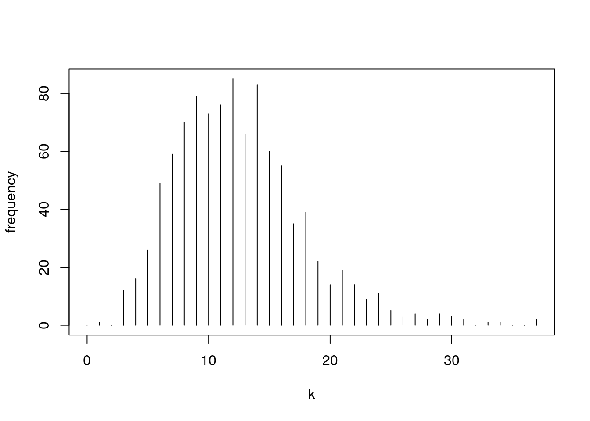
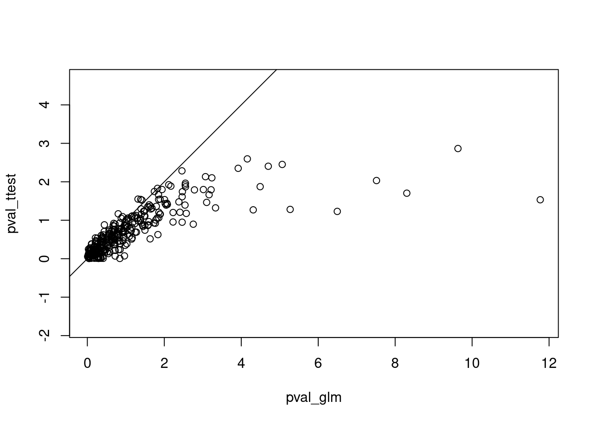
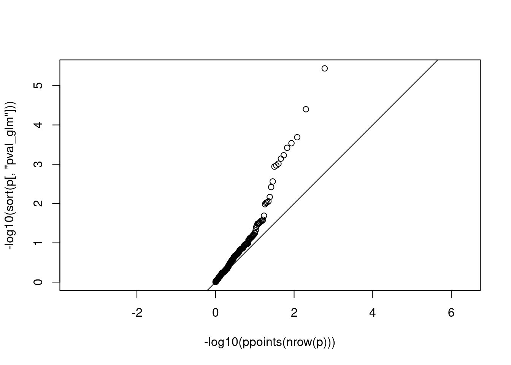
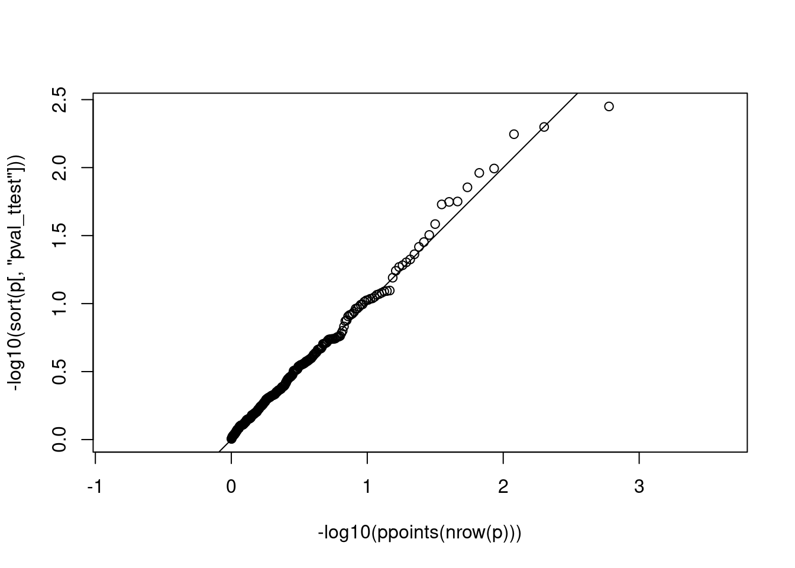
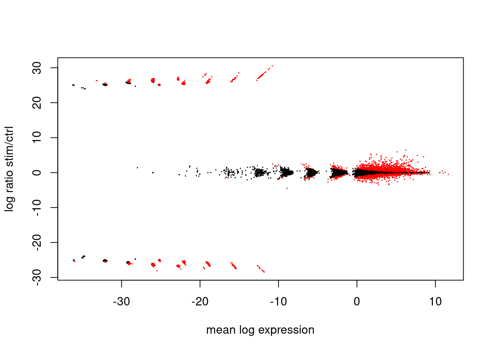
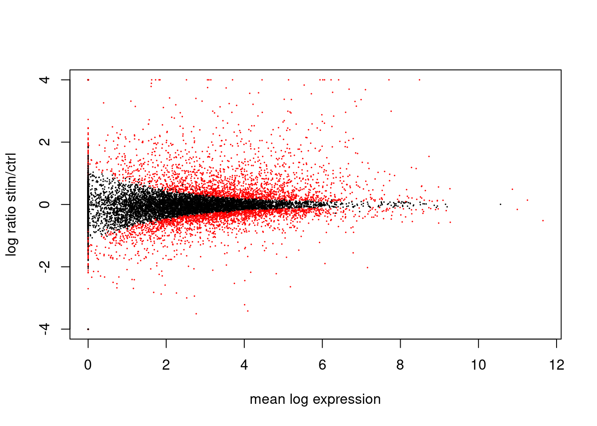
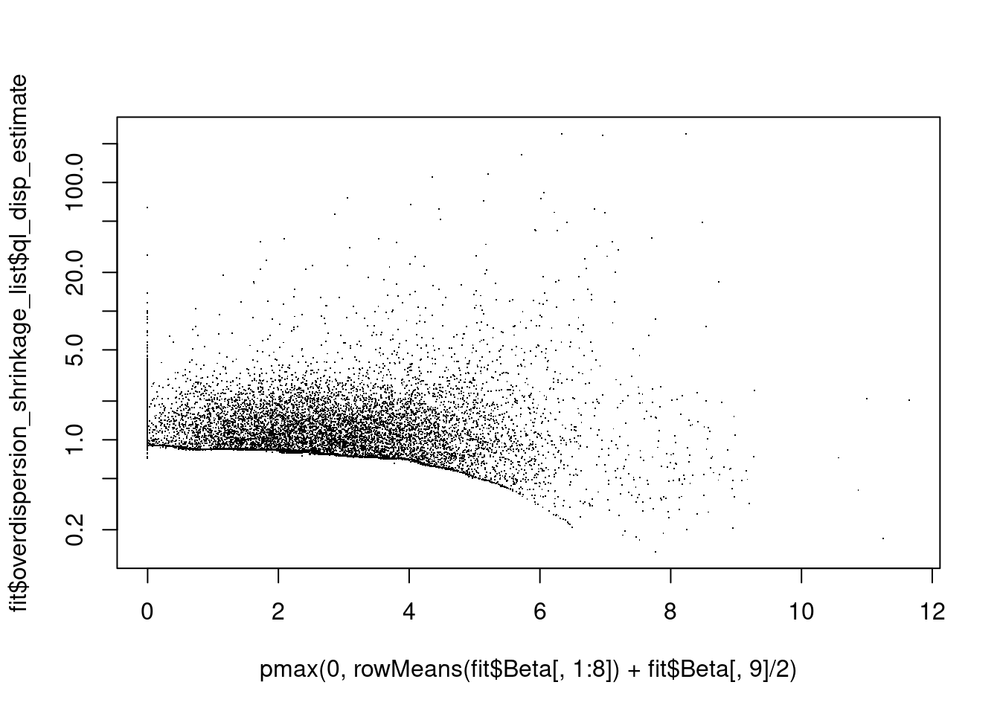
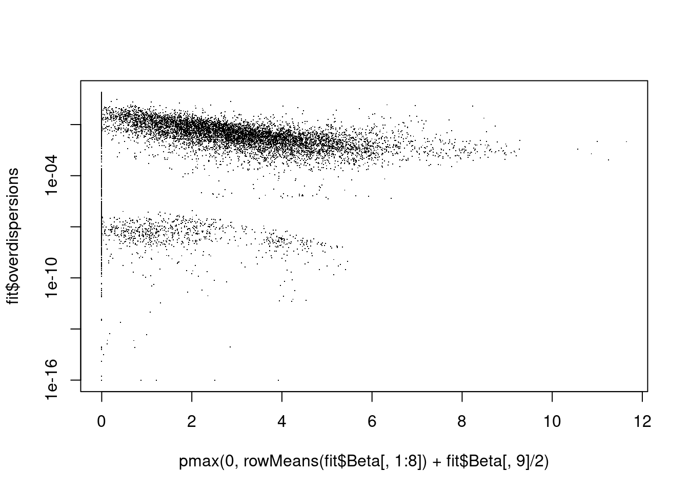

true_mean_log_fractions <- log( c( A = 1e-5, B = 2e-5 ) )
true_mean_log_fractions A B
-11.51293 -10.81978 Before the advent of single-cell RNA-Seq assays, RNA sequencing was always performed in “bulk”, i.e. on RNA obtained from a large number of samples. In a typical bulk RNA-Seq experiment, we may have two groups of samples – e.g., tissue samples from patients with a certain disease and, foc comparison, “control samples” of the same tissue, taken from healthy subjects –, and we quantify the abundance of each RNA species (i.e., the number of reads seen from each gene) for each sample. Our count matrix contains one column per sample. The counts are much higher as in RNA-Seq, as now, all the reads from the sample are assigned to only one column.
Our aim is to test for each gene the null hypothesis “The expression strength of this gene does not differ between the to samples”.
As we wills ee below, we can readily generalize this to experimentald esigns that are more complex than a simple comparison between two sample groups. We will, however, start with this simple case.
To make things even simpler, we start by looking at only one gene. We will first generate simulated example data.
We assume that the expected fraction of all the reads that map to this gene is \(10^{-5}\) in group A and \(2\cdot 10^{-5}\) in group B. We specify this by the logarithms of these fractions:
true_mean_log_fractions <- log( c( A = 1e-5, B = 2e-5 ) )
true_mean_log_fractions A B
-11.51293 -10.81978 We further assume that we have \(n=10\) samples, 5 per group:
n <- 10We assign the 10 samples to the two groups as follows
group <- rep( c( "A", "B" ), each=n/2 )
group [1] "A" "A" "A" "A" "A" "B" "B" "B" "B" "B"Let’s also assume that the actual fraction of the gene’s RNA among all the RNA in the sample varies within each group, following a log-normal distribution with a standard deviation of .5 on the log scale
set.seed( 13245768 )
true_fractions <- exp( rnorm( n, true_mean_log_fractions[group], .5 ) )
true_fractions [1] 7.564091e-06 5.627647e-06 6.852141e-06 1.381749e-05 4.462885e-06
[6] 3.525964e-05 2.882550e-05 1.277045e-05 2.373163e-05 2.297746e-05Next, we need to set for each sample a total number of reads. We draw these from a log-normal, too:
s <- round( 10^rnorm( n, 6, .3 ) )
s [1] 1826476 474672 5280081 672316 453857 1764398 4221048 932948 531548
[10] 557209Now, we can obtain the counts for our reads, by multiplying the fractions with the totals and pushing this through a Poisson distribution:
k <- rpois( n, s * true_fractions )
k [1] 16 1 40 9 4 64 131 9 14 8Is the difference between the two groups statistically significant?
As a first try, we perform log-normalization and then a t-test:
The log-normalization (with scaling factor \(10^6\), as this is the center of the distribution we have drawn s from)
y <- log( k/s * 1e6 + 1 )
y [1] 2.278296 1.133567 2.148926 2.666295 2.283744 3.618269 3.466827 2.365263
[9] 3.308284 2.731589Now the t test
t.test( y ~ group, var.equal=TRUE )
Two Sample t-test
data: y by group
t = -2.8485, df = 8, p-value = 0.02153
alternative hypothesis: true difference in means between group A and group B is not equal to 0
95 percent confidence interval:
-1.8021086 -0.1896535
sample estimates:
mean in group A mean in group B
2.102165 3.098046 As we can see, it is just barely significant.
Next, we will describe a more powerful statistical test, namely a generalized linear model (GLM) of the Gamma-Poisson family.
We try this out already now, using functionality from the glmGamPoi package:
library( glmGamPoi ) # available from Bioconductor
fit <- glmGamPoi::glm_gp( t(k), ~ group, size_factors = s )
glmGamPoi::test_de( fit, contrast="groupB" ) name pval adj_pval f_statistic df1 df2 lfc
1 row_1 0.0005157753 0.0005157753 12.05775 1 Inf 1.555168Now, the p values is much lower.
To understand what this package is doing, we will recapitulate its computations manually below.
Before, however, we need to discuss the Gamma-Poisson distribution.
When simulating our count data above, we used the following generative model:
\[ \begin{align} K_i | Q_i &\sim \text{Pois}(s_i Q_i) \\ \log Q_i &\sim \mathcal{N}( \eta_{g(i)}, \sigma_0^2 ) \end{align}\]
In words: \(Q_i\) is the fraction of all the mRNA molecules in sample \(i\) that originate from the gene under consideration. \(Q_i\) is drawn from a log-normal distribution with a (log-scale) mean \(\eta_{g(i)}\) which depends on the group \(g(i)\) to which sample \(i\) belong and a variance \(\sigma_0^2\), which is considered the same for all samples. Multiplying \(Q_i\) with the total number \(s_i\) of reads seen from sample \(i\) gives the expected number of reads for the gene. The actual number, \(K_i\), is drawn from a Poisson distribution using \(s_iQ_i\) as rate parameter.
Note: In the following, we shall drop the index \(i\).
What is the expected mean and variance of \(K\) after marginalizing over \(Q\)?
For the mean, we use the law of total expectation:
\[ \operatorname{E}(K) = \operatorname{E}(\operatorname{E}(K|Q)) = s\operatorname{E}(Q).\]
For the variance, we use the law of total variance:
\[\begin{align} \operatorname{Var}(K|Q) &= \operatorname{E}(\operatorname{Var}(K|Q)) + \operatorname{Var}(\operatorname{E}(K|Q)) \\ & = \operatorname{E}(sQ) + \operatorname{Var}(sQ) \\ &= s \operatorname{E}(Q) + s^2 \operatorname{Var}(Q) \end{align}\] Note that here we have used that variance equals mean for the Poisson, but no assumption on the shape of the distribution for \(Q\) except for it having finite first and second moment.
The random variable \(Q_i\), on which \(K_i\) is conditional, cannot be observed. Hence we might want to integrate it out and find the marginal probability mass function, i.e., the marginal probability that \(K_i=k\), which is \[ f(k)=\int_\limits0^\infty f_\text{Pois}(k;q)\, f_\text{log-normal}(q;\eta,\sigma^2)\,\text{d}q,\] where \(f_\text{Pois}(k,q)\) is the probability mass function of a Poisson distribution the expected value \(q\) and \(f_\text{log-normal}(x;\eta,\sigma^2)\) is the probability density function of a log-normal with logscale mean \(\eta\) and log-scale variance \(\sigma^2\).
Unfortunately, there is no closed form for this integral. This is a problem as we will later have to maximize a likelihood based on this function, and a numerical integration of an integral in each optimization step would not be efficient.
The traditional solution for this is to replace the log-normal distribution with a Gamma distribution. These two distributions look quite similar for not too large coefficients of variations, but more importantly, the Gamma distribution is conjugate to the Poisson in the sense of Bayesian statistics.
We have \[ \int_\limits0^\infty f_\text{Pois}(k;q)\, f_\text{Ga}(q;\mu,\sigma^2)\,\text{d}q=f_\text{GP}\left(k;\mu,\frac{\sigma^2}{\mu^2}\right), \] where \[ f_\text{Pois}(k;q) = e^{-q} \frac{q^k }{k!}, \] is the pmf of a Poisson distribution with mean \(q\), \[f_\text{Ga}(q;\mu,\sigma^2)=\frac{1}{\Gamma(\kappa)\theta^\kappa}x^{\kappa-1} e^{-x/\theta}\] is the pdf of a Gamma distribution with mean \(\mu=\kappa\theta\) and variance \(\sigma^2=\kappa\theta^2\). After one carries out the reparametrization of \(f_\text{Ga}\) from \((\kappa,\theta)\) to \((\mu,\sigma^2)\), one can figure out the integral and get
\[ f_\text{GP}\left(k;\mu,\alpha\right)=\frac{\Gamma(k+r)}{\Gamma(k+1)\Gamma(r)}(1-p)^kp^{r}, \] with \(\mu=rp/(1-p)\) and \(\alpha=1/r\).
This is the probability mass function of a distribution that is called the negative-binomial (NB) distribution or the Gamma-Poisson (GP) distribution.
The term “negative binomial” is merely due to the fact that the pmf looks similar to the pmf of the binomial distribution with an extra minus sign somewhere in the binomial coefficient. As this term is misleading, the alternative name “Gamma-Poisson”, referring to its provenance from the integral above, is preferred by some authors.
The GP distribution also arised as the answer to the following question: Bernoulli trials, which are i.i.d. with success probability \(p\), are performed until \(r\) successes have been observed. What is the probability that until then, \(k\) failures have happened (i.e., that the \(r\)-th success happends in the \((k+r)\)-th trial)?
Therefore, the parameter \(r\) is often referred to as the “size parameter” and \(p\) as the probability parameter.
When using the GP distribution as marginal of a hierarchical Gamma-Poisson mixture, it is advantageous to instead parametrize the distribution with its mean \(\mu=rp/(1-p)\), which is also the mean of the underlying Gamma, and the “overdispersion parameter” \(\alpha=1/r\). The latter is so called because the GP’s variance is \[v=\mu+\alpha\mu^2\] According to the law of total variance, this arises as sum of the contributions from the two underlying distributions: \(\mu\) is the variance of the Poisson, \(\alpha\mu^2\) the variance of the Gamma, or, \(\sqrt{\alpha}\) is its coefficient of variation (CV, ratio of standard deviation to mean).
The limit \(\alpha\rightarrow 0\) corresponds to a Gamma with zero variance, i.e., the “hidden” random variable \(Q\) is constant and the distribution of \(K\) becomes “pure Poisson”.
A distribution of counts is called “overdispersion” if its variance exceeds the expectation from Poisson, and hence, \(\alpha\) describes the degree of overdispersion.
When comparing the Gamma with the log-normal, we also notice that the CV becomes the variance when a random variable is log-transformed. Hence, \(\alpha\) corresponds to the \(\sigma^2\) in our orginal log-normal distribution.
Let us simulate 1000 log-normal random variates:
eta <- rnorm( 1000, mean=2.5, sd=.3 )Now exponentiate them and push them through a Poisson:
k <- rpois( 1000, exp( eta ) )Here’s a histogram of our counts
plot( (0:max(k)), tabulate(1+k), type="h", xlab="k", ylab="frequency" )
We find the best-fitting GP distribution via maximum likelihood (ML) parameter estimation:
optim(
c( mu=10, size=1 ),
function(x) -sum( dnbinom( k, mu=x[1], size=x[2], log=TRUE ) )
) $par
mu size
12.54444 10.77800
$value
[1] 3027.768
$counts
function gradient
53 NA
$convergence
[1] 0
$message
NULLThis fits well to the expected mean (using the formula for the mean of a log-normal)
exp( 2.5 + .3/2 )[1] 14.15404and the expected size
1/.3^2[1] 11.11111Instead of maximum likelihood, we could also have used the method of moments, i.e., simply taking the mean
mean(k)[1] 12.544and getting the size \(1/alpha\) from \(v=\mu+\alpha\mu^2\):
1/ ( ( var(k) - mean(k) ) / mean(k)^2 )[1] 10.10598For smaller sample sizes, the method of moments often runs into trouble (sample variance might be smaller than sample mean) and ensuring convergence of the maximum-likelihood optimization requires a few tricks. The glmGamPoi packages knows these:
fit <- glm_gp( k, do_cox_reid_adjustment=FALSE, overdispersion_shrinkage=FALSE )
fit$Beta # log mean Intercept
[1,] 2.529242fit$overdispersions # alpha[1] 0.09280296Similar to the case of estimating variance via ML, which has a negative bias that is compensated with Bessel’s correction, the ML estimator for \(\alpha\) also has a downwards bias. glm_gp can compensate using a so-called Cox-Reid adjustment:
fit <- glm_gp( k, do_cox_reid_adjustment=TRUE, overdispersion_shrinkage=FALSE )
fit$Beta # log mean Intercept
[1,] 2.529242fit$overdispersions # alpha[1] 0.09297406Let’s get back to our initial simulation: We have two groups of samples, each sample \(i\) with a total read count of \(s_i\) and a read count \(K_i\) for the gene of interest. We have generated the counts with the following code (copied from above):
set.seed( 13245768 )
n <- 10
group <- rep( c( "A", "B" ), each=n/2 )
true_fractions <- exp( rnorm( n, true_mean_log_fractions[group], .5 ) )
s <- round( 10^rnorm( n, 6, .3 ) )
k <- rpois( n, s * true_fractions )We now model our counts with a Gamma-Poisson (even though we have generated with a lognormal-Poisson): We assume that
\[K_i \sim \text{GP}(\mu_i,\alpha),\] where the overdispersion \(\alpha\) is the same for all samples and the expectations \(\mu_i\) depend on the sample’s group as follows: \[ \log \mu_i =: \eta_i = \beta_0 + x_i \beta_1 + \log s_i,\] where \(x_i\) is an indicator variable that is 0 for samples from one group and 1 for samples from the other group.
We wish to test the null hypothesis that there is no difference in expectation between the two groups, i.e., that \(\beta_1=0\).
We use glm_gp to fit the model:
fit <- glm_gp( k, ~ group )Here’s the coefficients \(\beta_0\) and \(\beta_1\):
fit$Beta Intercept groupB
[1,] 2.639057 1.17204and here’s the overdispersion \(\alpha\)
fit$overdispersions[1] 1.225823To get p values for the null hypothesis \(\beta_0=0\), we use test_de:
test_de( fit, "groupB" ) name pval adj_pval f_statistic df1 df2 lfc
1 row_1 0.1088443 0.1088443 2.570921 1 Inf 1.690896To see whether this model has more statistical power than the simple t-test we tried initially, we rerun the data generation (with slightly different true means) and fitting 300 times:
n <- 10
group <- rep( c( "A", "B" ), each=n/2 )
true_mean_log_fractions <- log( c( A = 1e-5, B = 1.5e-5 ) )
t(replicate( 300, {
true_fractions <- exp( rnorm( n, true_mean_log_fractions[group], .5 ) )
s <- round( 10^rnorm( n, 6, .3 ) )
k <- rpois( n, s * true_fractions )
fit <- glm_gp( k, ~ group, size_factors=s )
ttres <- t.test( log( k/s*1e6 + 1 ) ~ group )
c(
pval_glm = test_de( fit, "groupB" )$pval,
pval_ttest = ttres$p.value )
} )) -> p
head(p) pval_glm pval_ttest
[1,] 3.989270e-01 0.37993188
[2,] 3.197510e-07 0.05888683
[3,] 2.220293e-01 0.24582777
[4,] 4.130410e-02 0.09076260
[5,] 8.318204e-03 0.03887266
[6,] 1.252043e-01 0.20487778A plot shows that the GLM gives low p values more often.
plot( -log10(p), asp=1 )
abline( 0, 1 )
We should also check whether both tests hold their size, i.e, give uniform p values when there is really no difference:
n <- 10
group <- rep( c( "A", "B" ), each=n/2 )
true_mean_log_fractions <- log( c( A = 5e-5, B = 5e-5 ) ) # <- no difference
t(replicate( 300, {
true_fractions <- exp( rnorm( n, true_mean_log_fractions[group], .5 ) )
s <- round( 10^rnorm( n, 6, .3 ) )
k <- rpois( n, s * true_fractions )
fit <- glm_gp( k, ~ group, size_factors = s )
ttres <- t.test( log( k/s*1e6 + 1 ) ~ group )
c(
pval_glm = test_de( fit, "groupB" )$pval,
pval_ttest = ttres$p.value )
} )) -> p
head(p) pval_glm pval_ttest
[1,] 0.33658243 0.2442447
[2,] 0.93420799 0.5684110
[3,] 0.90239586 0.7101600
[4,] 0.35327992 0.4739532
[5,] 0.72994463 0.7105911
[6,] 0.07604844 0.2078610We use a log-scaled QQ plot to check for uniformity:
plot( -log10( ppoints(nrow(p)) ), -log10( sort(p[,"pval_glm"]) ), asp=1 )
abline( 0, 1 )
plot( -log10( ppoints(nrow(p)) ), -log10( sort(p[,"pval_ttest"]) ), asp=1 )
abline( 0, 1 )
Let us apply all this to the “ifnb” dataset
suppressPackageStartupMessages( {
library(Seurat)
library( tidyverse ) })
ifnb <- SeuratData::LoadData( "ifnb" )Validating object structureUpdating object slotsEnsuring keys are in the proper structureWarning: Assay RNA changing from Assay to AssayEnsuring keys are in the proper structureEnsuring feature names don't have underscores or pipesUpdating slots in RNAValidating object structure for Assay 'RNA'Object representation is consistent with the most current Seurat versionWarning: Assay RNA changing from Assay to Assay5The cells in this data set have been taken from a number of donors, as described in the paper from which the data set orginates. A mapping of cells to donor can be found in the table “GSE96583_batch2.total.tsne.df.tsv.gz” deposited on GEO with accession GSE96583.
read.delim( "~/Downloads/GSE96583_batch2.total.tsne.df.tsv.gz", row.names=1 ) -> cell_meta
rownames(cell_meta) <- str_replace( rownames(cell_meta), "-", "." )
head( cell_meta ) tsne1 tsne2 ind stim cluster cell
AAACATACAATGCC.1 -4.277833 -19.294709 107 ctrl 5 CD4 T cells
AAACATACATTTCC.1 -27.640373 14.966629 1016 ctrl 9 CD14+ Monocytes
AAACATACCAGAAA.1 -27.493646 28.924885 1256 ctrl 9 CD14+ Monocytes
AAACATACCAGCTA.1 -28.132584 24.925484 1256 ctrl 9 CD14+ Monocytes
AAACATACCATGCA.1 -10.468194 -5.984389 1488 ctrl 3 CD4 T cells
AAACATACCTCGCT.1 -24.367997 20.429285 1256 ctrl 9 CD14+ Monocytes
multiplets
AAACATACAATGCC.1 doublet
AAACATACATTTCC.1 singlet
AAACATACCAGAAA.1 singlet
AAACATACCAGCTA.1 doublet
AAACATACCATGCA.1 singlet
AAACATACCTCGCT.1 singletThe donor ID is in column ind. We add this to the Seurat object:
ifnb$donor <- factor( cell_meta[ colnames(ifnb), "ind" ] )Let us siumulate bulk-sequencing by adding up all counts from cells of the same donor, but split by condition:
sapply( levels(ifnb$donor), function(donor)
rowSums( LayerData( ifnb, "count" )[ ,
ifnb$donor == donor & ifnb$stim=="CTRL", drop=FALSE ] ) ) -> bulk_counts_ctrl
colnames(bulk_counts_ctrl) <- str_c( colnames(bulk_counts_ctrl), "_", "ctrl" )
sapply( levels(ifnb$donor), function(donor)
rowSums( LayerData( ifnb, "count" )[ ,
ifnb$donor == donor & ifnb$stim=="STIM", drop=FALSE ] ) ) -> bulk_counts_stim
colnames(bulk_counts_stim) <- str_c( colnames(bulk_counts_stim), "_", "stim" )
cbind( bulk_counts_ctrl, bulk_counts_stim ) -> bulk_counts
head( bulk_counts ) 101_ctrl 107_ctrl 1015_ctrl 1016_ctrl 1039_ctrl 1244_ctrl
AL627309.1 0 0 0 1 0 1
RP11-206L10.2 0 0 0 2 0 0
LINC00115 3 1 11 6 0 6
NOC2L 34 26 139 50 24 98
KLHL17 0 0 3 1 1 3
PLEKHN1 2 1 4 3 1 2
1256_ctrl 1488_ctrl 101_stim 107_stim 1015_stim 1016_stim
AL627309.1 1 1 0 0 0 0
RP11-206L10.2 1 1 0 0 0 0
LINC00115 6 8 3 0 7 2
NOC2L 104 93 44 29 81 48
KLHL17 4 0 1 1 1 1
PLEKHN1 3 4 11 0 21 7
1039_stim 1244_stim 1256_stim 1488_stim
AL627309.1 0 0 0 0
RP11-206L10.2 0 0 0 0
LINC00115 2 3 5 6
NOC2L 36 85 100 99
KLHL17 0 0 1 1
PLEKHN1 4 6 3 9Let’s also construct a sample table
tibble( sample = colnames(bulk_counts) ) %>%
mutate( donor = factor( str_split_i( sample, "_", 1 ) ) ) %>%
mutate( condition = factor( str_split_i( sample, "_", 2 ) ) ) -> sampleTable
sampleTable# A tibble: 16 × 3
sample donor condition
<chr> <fct> <fct>
1 101_ctrl 101 ctrl
2 107_ctrl 107 ctrl
3 1015_ctrl 1015 ctrl
4 1016_ctrl 1016 ctrl
5 1039_ctrl 1039 ctrl
6 1244_ctrl 1244 ctrl
7 1256_ctrl 1256 ctrl
8 1488_ctrl 1488 ctrl
9 101_stim 101 stim
10 107_stim 107 stim
11 1015_stim 1015 stim
12 1016_stim 1016 stim
13 1039_stim 1039 stim
14 1244_stim 1244 stim
15 1256_stim 1256 stim
16 1488_stim 1488 stim Now, fit a GP GLM for each gene:
glm_gp( bulk_counts, ~ 0 + donor + condition, sampleTable, size_factors="ratio" ) -> fitHere are the fit coefficients:
head( fit$Beta ) donor101 donor1015 donor1016 donor1039 donor107
AL627309.1 -25.0011831 -25.2338418 0.02288187 -24.9461568 -25.1661864
RP11-206L10.2 -25.9427862 -26.0514273 0.71602905 -25.9206888 -26.1200160
LINC00115 1.4290414 1.6171427 1.59948399 0.9586417 0.3263743
NOC2L 3.8344172 3.9840096 3.97882870 4.1918979 4.2029521
KLHL17 -0.2573035 0.1829422 0.31030053 0.3686145 0.4231668
PLEKHN1 1.2688477 1.1319120 1.01571468 0.9261402 -0.4784155
donor1244 donor1256 donor1488 conditionstim
AL627309.1 -0.3759923 -0.52587842 -0.2122554 -25.01914118
RP11-206L10.2 -26.1031316 -0.52587842 -0.2122554 -25.79452179
LINC00115 1.3769919 1.39216122 1.7509083 -0.36824756
NOC2L 4.2702352 4.17546472 4.2085385 -0.05326926
KLHL17 0.3439216 0.67329687 -0.7767260 -0.60180319
PLEKHN1 0.4850074 -0.01027775 0.7508398 1.07933377deres <- test_de( fit, "conditionstim" )
head( deres ) name pval adj_pval f_statistic df1 df2 lfc
1 AL627309.1 0.033179845 0.096093594 5.1323476 1 23.07005 -10.00000000
2 RP11-206L10.2 0.031359481 0.092253461 5.2533175 1 23.07005 -10.00000000
3 LINC00115 0.202097253 0.365282662 1.7239445 1 23.07005 -0.53126892
4 NOC2L 0.519658527 0.689004744 0.4275504 1 23.07005 -0.07685129
5 KLHL17 0.265167731 0.441150956 1.3041703 1 23.07005 -0.86821847
6 PLEKHN1 0.001200722 0.007223347 13.6295691 1 23.07005 1.55714947The following is called an MA plot:
plot(
rowMeans(fit$Beta[,1:8]) + fit$Beta[,9]/2,
fit$Beta[,9],
col = ifelse( deres$adj_pval < .1, "red", "black" ),
xlab = "mean log expression",
ylab = "log ratio stim/ctrl", cex=.1 )
The same, with clamping
plot(
pmax( 0, rowMeans(fit$Beta[,1:8]) + fit$Beta[,9]/2 ),
pmax( -4, pmin( 4, fit$Beta[,9] ) ),
col = ifelse( deres$adj_pval < .1, "red", "black" ),
xlab = "mean log expression",
ylab = "log ratio stim/ctrl", cex=.1 )
[…]
[…]
plot(
pmax( 0, rowMeans(fit$Beta[,1:8]) + fit$Beta[,9]/2 ),
fit$overdispersion_shrinkage_list$ql_disp_estimate,
log="y", pch="." ) 
plot(
pmax( 0, rowMeans(fit$Beta[,1:8]) + fit$Beta[,9]/2 ),
fit$overdispersions,
log="y", pch="." ) Warning in xy.coords(x, y, xlabel, ylabel, log): 2608 y values <= 0 omitted
from logarithmic plot
The classical text-book on GLMs is Generalized linear models by Peter McCullagh and John Nelder
A more modern one is Generalized linear models with examples in R by Peter K. Dunn and Gordon K. Smyth
The first R package made for the use of GP GLMs for analysis of differential expression data was “edgeR”, by Gordon Smyth an colleagues, originally described in this paper. There are several papers describing further improvements.
Another R package, similar in functionality, was DESeq, developed by Wolfgang Huber and me. We, together with Mike Love, later developed DESeq2. A more recent one, also from the Huber research group, is glmGamPoi, that we have used above.